Vert.X
Sogeti Guru Night
Paulo Lopes
Welcome
Did you already use vert.x ?
Did you hear about micro-services architecture ?
Did you already deployed micro-services based applications ?
Outline
- Micro-services: why and what
- vert.x in 30 minutes
- Presentation of the application: Vert2go
- You first service
- Composing vert.x service
- Consuming a REST api
- Providing a REST api
- Deploying some parts on the Cloud
- Monitoring
Some technologies
vert.x
docker
openshift
hawkular
grafana
Micro-services: why and what
Because it grows faster than you think
Becoming touchy
Decentralization
To keep things under control, makes them:
small
loosely-coupled
highly coherent
Process
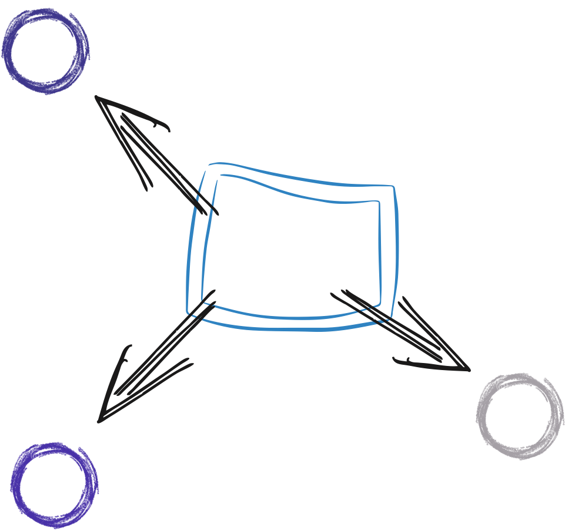Process
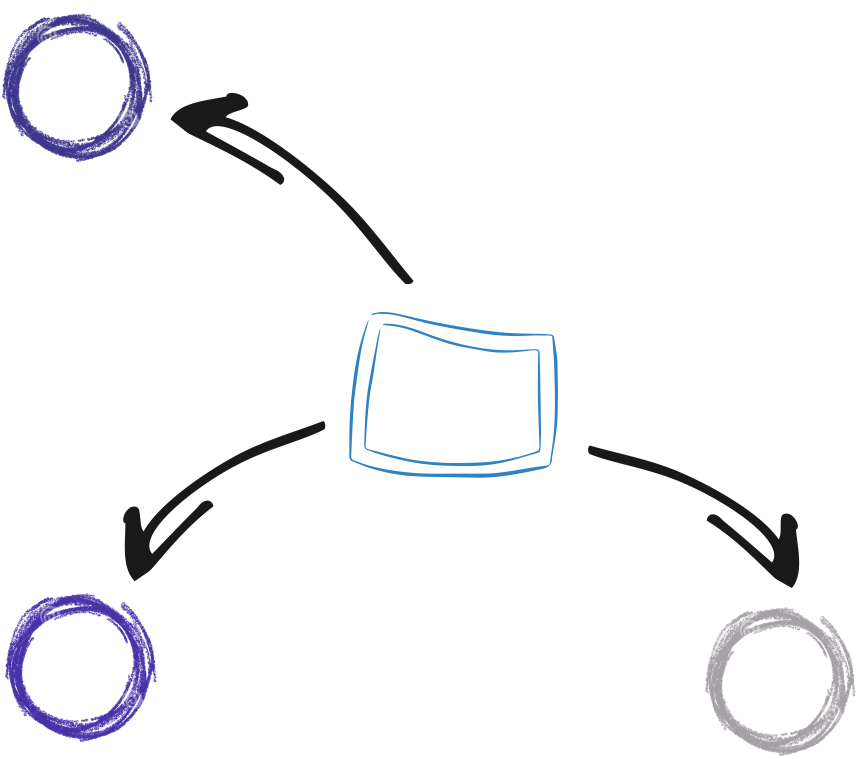Process
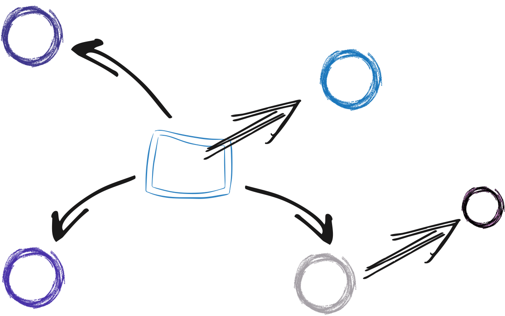Process
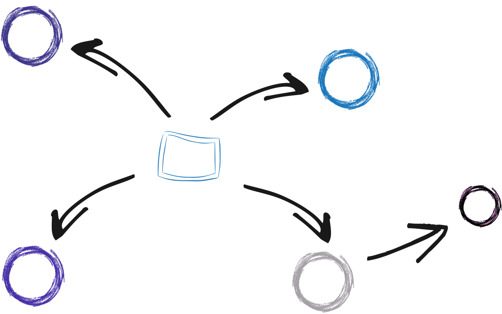A few steps later
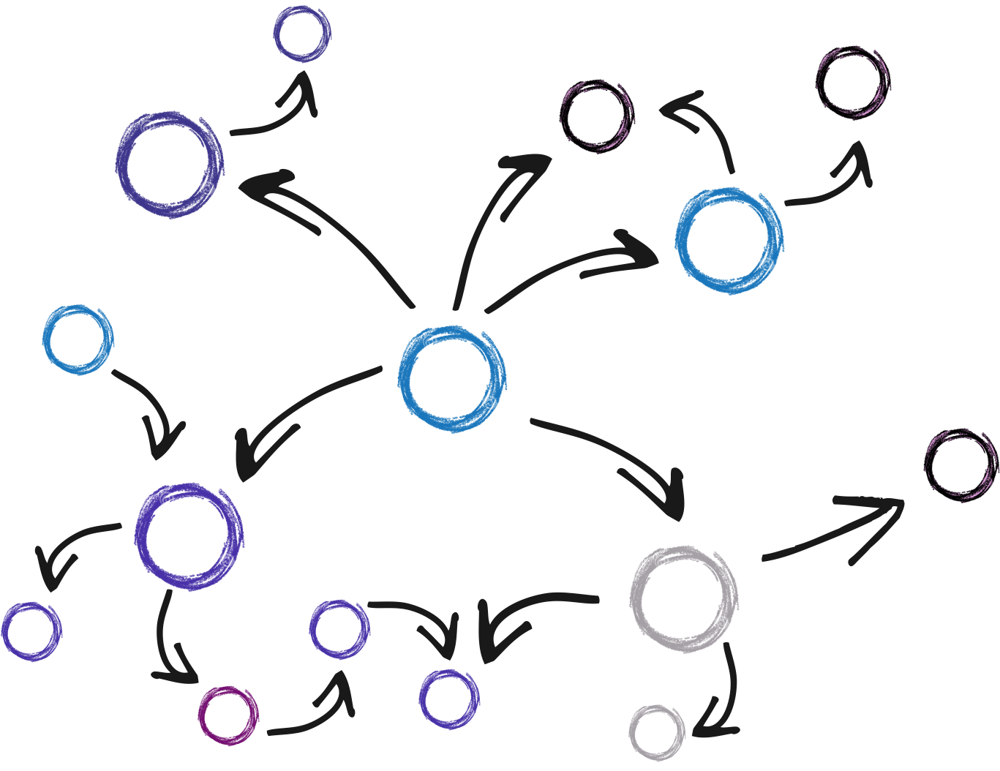Not a silver bullet
Pro
Asynchronous evolution
Better local understanding
Scalability
Integration / Polyglot
Cons
Global debug
Deployment
Latency (multi-hop)
Dynamic availability
Micro-service
!=
container
Micro-service
!=
REST
Vert.X
a toolkit to build micro-service applications
Vert.X
Framework
Unopiniated
Reactive
Polyglot
Distributed
Reactor-pattern

Reactor-pattern

Reactor-pattern

Reactor-pattern

What is ?
A Message
A Notification
A HTTP Request
A command
A file
A result, an error
Asynchronous Development Model
void operation(param1, param2, Handler<T> handler) {
// ...
T t = ...
handler.handle(t)
// ...
}void handle(T t) {
// do something with t
}operation(1, 2, t -> System.out.println(t));Asynchronous Development Model
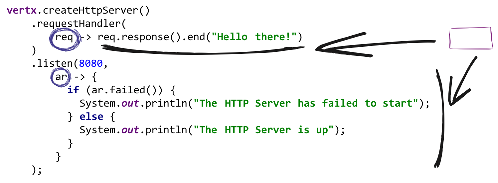The event bus

Point to Point
Publish / Subscribe
Request / Response
The event bus

Point to Point
Publish / Subscribe
Request / Response
The event bus

Point to Point
Publish / Subscribe
Request / Response
The event bus

The event bus allows distributed communication.
The event bus
Almost anything
can send / receive messages
Verticles
An agent-like model
Verticles are chunks of code that get deployed and run by Vert.x.
vertx.deployVerticle("my.verticle");Verticles
An agent-like model
Dead verticles are restarted on a running node.
vertx.deployVerticle("my.verticle"),
new DeploymentOptions().setHA(true));Polyglot
EventBus eb =
vertx.eventBus();
eb.publish("some-topic",
"Some data from Java");var eb = vertx.eventBus();
eb.publish("some-topic",
"Some data from JS");eb = $vertx.event_bus()
eb.publish("some-topic",
"Some data from Ruby")def eb = vertx.eventBus()
eb.publish("some-topic",
"Some data from Groovy")vert.x in 1 slide
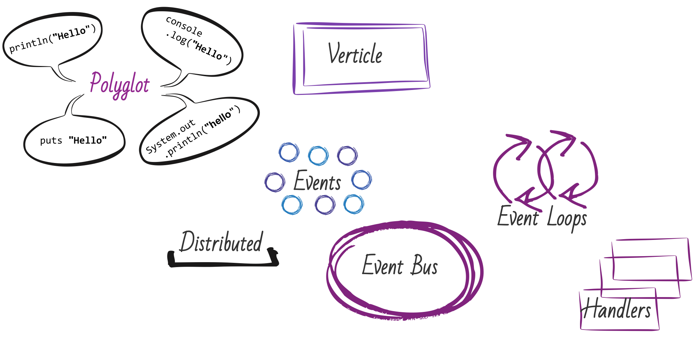Vert.X
&
Micro-Services
From verticles to micro-services
Verticles are loosely-coupled.
From verticles to micro-services
Verticles can be deployed individually.
From verticles to micro-services
Verticles can
evolve
asynchronously.
From verticles to micro-services
Micro-services interacts using the event bus.
From verticles to micro-services
... or using HTTP, TCP
STOMP, AMQP...
Service Proxies
Generated proxies for the event bus.
Service Proxies
Consumption of services from node.js or the browser.
vert2go
vert2go
Micro-Service application
Storage: MongoDB, Redis
Service invocation protocol: Event Bus proxies, REST
UI: Angular, SockJS
Architecture
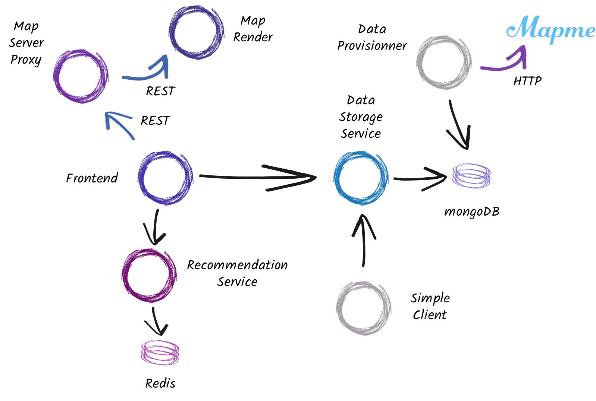Deployment
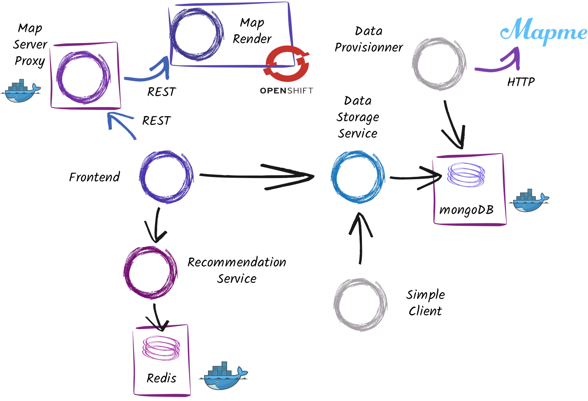Prerequisites
Git
Maven
Docker
Optionally: an Openshift account
Windows user: Virtualbox
Mac OS X user: docker-machine
Step 0
Scaffolding
git clone https://github.com/pmlopes/sogeti-gurunight-2015.git
sogeti-gurunight-2015
mvn clean installStep 0
Linux: use conf/config.json
Mac: use conf/config-docker-machine.json
Step 1
Start mongoDB
docker run --name some-mongo -d -p 27017:27017 mongoStep 2
Data Storage Service
Define the place structure
Interact with MongoDB
Expose a service on the Event Bus
Step 2
Data Storage Service
cd data-storage-service
mvn clean installStep 2
The place structure
/**
* The place structure.
*
* It's a data object that can be serialized to JSON (and built from
* JSON). Data objects can be used in event bus proxies.
*/
@DataObject(generateConverter = true)
public class Place {
// ...
}
Step 2
The place structure
public Place() { /* Empty constructor */ }
public Place(Place other) {
this.name = other.name;
//...
}
public Place(JsonObject json) {
PlaceConverter.fromJson(json, this);
}
public JsonObject toJson() {
JsonObject json = new JsonObject();
PlaceConverter.toJson(this, json);
return json;
}Step 2
The place structure
Just getters and setters on the fields
It's jackson under the hood
Step 2
The data storage service
/**
* Service exposed on the event bus to provide access to
* the stored Places.
*/
@VertxGen
@ProxyGen
public interface DataStorageService {
static DataStorageService createProxy(Vertx vertx, String address) {
return ProxyHelper
.createProxy(DataStorageService.class, vertx, address);
}
void getAllPlaces(Handler<AsyncResult<List<Place>>> resultHandler);
void addPlace(Place place, Handler<AsyncResult<Void>> resultHandler);
}Step 2
The data storage service
Open the i.v.d.d.i.DataStorageServiceImpl class
public void getPlacesForCategory(String category,
Handler<AsyncResult<List<Place>>> resultHandler) {
mongo.find(COLLECTION,
new JsonObject().put("category", category),
ar -> {
if (ar.failed()) {
resultHandler.handle(Future.failedFuture(ar.cause()));
} else {
List<Place> places = ar.result().stream()
.map(Place::new).collect(Collectors.toList());
resultHandler.handle(Future.succeededFuture(places));
}
}
);
}Step 2
The data storage service
The verticle instantiating the service
private DataStorageServiceImpl service;
@Override
public void start() throws Exception {
service = new DataStorageServiceImpl(vertx, config());
ProxyHelper.registerService(DataStorageService.class, vertx, service,
"vertx2go.places");
}
@Override
public void stop() throws Exception {
service.close();
}Step 2
Executing data storage service
It needs a configuration to connect to the mongo database (src/conf/config.json)
{
"db_name" : "places",
"connection_string": "mongodb://localhost:27017"
}Update the mongo adress on mac to 192.168.99.100.
Step 2
Executing the data storage service
The maven build has created an executable fat jar
java -jar target/data-storage-service-1.0-SNAPSHOT-fat.jar \
--cluster \
--conf=src/conf/config.json
Step 3
Provisioning some data
The data is extracted from http://mapme.com
This data is consumed as JSON and inserted into the mongo database (without using the service)
cd data-provisioning
mvn clean packageStep 3
Provisioning some data
Calling a HTTP service
private void provision() {
HttpClient client = vertx.createHttpClient();
client.getNow(80, "mapme.com",
"/api/map/910f1efe-d403-481e-a87e-bd8c9df7a131/places",
response -> {
/* TODO */
}
);
}Step 3
Executing the provisioner
mvn clean package
java -jar target/data-provisioning-1.0-SNAPSHOT-fat.jar \
--conf src/conf/config.json
# when done, CTRL+C
Step 4
A simple service client
Just to be sure that everything works
cd data-storage-client
mvn clean package
java -jar target/data-storage-client-1.0-SNAPSHOT-fat.jar --cluster
# CTRL+C to exit
Step 4
A simple client in Groovy
def service = DataStorageService.createProxy(vertx, "vertx2go.places")
service.getAllPlaces({
result ->
// TODO
})Under the hood, JSON messages are sent, process and returned.
Step 5
The Map services
- These services provides map tiles.
- The map server service acts as a "proxy" on the Map Render Service.
- Both provide a REST API
- Let's deploy the Map Render Service in the Cloud
Step 5
The Map Render Service
- It's a vert.x application packaged as a fat jar.
- We use the Openshift vert.x 3 cartridge
rhc create-app map0render0service
https://raw.githubusercontent.com/vert-x3/vertx-openshift-cartridge/master/metadata/manifest.yml
./applicationgit add -A
git commit -m "deploy my application"
git push origin masterStep 5
The Map Server Proxy - version service
- It's also a vert.x application packaged as a fat jar.
cd map-server-proxy
mvn clean package
java -jar target/map-server-proxy-1.0-SNAPSHOT-fat.jar start- No
-cluster- we expose a REST API (not based on the event bus) - We start this application in background (
start)
Step 5
The Map Server Proxy - version docker
- It's also a vert.x application packaged as a fat jar.
- Running in a docker container
cd map-server-proxy
mvn clean package docker:build
docker run -t -i -p 8000:8000 vertx-vertx2go/map-server-proxy
Step 6
Deploying the frontend
The frontend is developed in JavaScript (server and client)
Edit src/main/resources/webroot/js/controllers.js and set the right addresses
cd ../frontend
mvn clean package
java -jar target/frontend-1.0-SNAPSHOT-fat.jar --clusterhttp://localhost:8080/
Step 5
Deploying the frontend
Members [2] {
Member [192.168.1.29]:5701 <--- Data Storage Service
Member [192.168.1.29]:5702 this <--- Frontend
}Step 5
some parts are missing ?
Cannot read property 'up' of undefined
The recommendation service is missing
Step 6
The recommendation service
First, we need Redis:
docker run -d -p 6379:6379 redisStep 6
The recommendation service
Open the RecommendationServiceImpl class, and write the missing parts
Step 6
The recommendation service
mvn clean package
java -jar target/recommendation-service-1.0-SNAPSHOT-fat.jar -cluster -conf src/conf/config.jsonStep 6
Is it working ?
go back to the application (browser), and try to vote
Step 7
Monitoring
Monitoring is key in micro-service applications:
- Logs
- Availability
- Technical metrics
- Business metrics
It's important to centralized these data
Step 7
Centralizing Logs
You can use any log collector, we are going to use Graylog2
docker run -t -p 9000:9000 -p 12201:12201 -p 12201:12201/udp \
graylog2/allinoneThis image requires you to create the UDP / TCP sources
Step 7
Configuring Graylog
- Open http://localhost:9000 and log in (admin/admin)
- Go to system - input
- Select
Gelf UDPand click on Launch new input - Check the Global input checkbox
- Set a name
- Click on Launch
Step 7
Centralizing Logs
In the data-storage-service, add some log using LOGGER.
Configure the handler to emit the logged messages:
- copy the logging configuration from ../etc to src/main/resource
- remove the -graylog suffix
- re-package and relaunch the data storage service
- Check the sent messages
Step 7
Centralizing Logs (JUL)
handlers=java.util.logging.ConsoleHandler,java.util.logging.FileHandler,biz.paluch.logging.gelf.jul.GelfLogHandler
#...
biz.paluch.logging.gelf.jul.GelfLogHandler.level=INFO
biz.paluch.logging.gelf.jul.GelfLogHandler.host=server-ip
biz.paluch.logging.gelf.jul.GelfLogHandler.port=12201
biz.paluch.logging.gelf.jul.GelfLogHandler.version=1.1vertx-default-jul-logging.properties
Step 7
Messages sent to Graylog
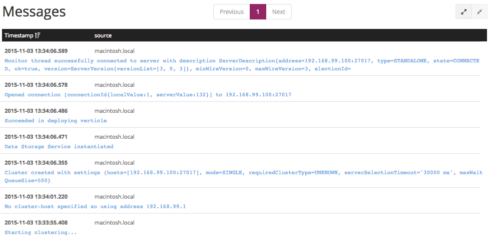Step 8
Send monitored data to Hawkular
- Hawkular is a monitoring and management Platform
- Time series
- Send data using a REST API
- Expose a Grafana compliant database
Step 8
Send monitored data to Hawkular
- Send data to the event bus
- A bridge send it to Hawkular
- Manage a dashboard on Grafana
Step 8
Start Hawkular
docker run -t -i -p 8090:8080 jboss/hawkular-aioStep 8
Start the Hawkular bridge
cd eventbus-to-hawkular-bridge
mvn clean package
java -jar target/eventbus-to-hawkular-bridge-1.0-SNAPSHOT-fat.jar \
-conf src/conf/config.json -cluster
Step 8
Send data
private void report(long time) {
vertx.eventBus().send("metrics", new JsonObject()
.put("source", "mongo.query")
.put("value", time));
}Step 8
Launch grafana
docker run -i -p 3000:3000 grafana/grafanaStep 8
Create Hawkular datasource
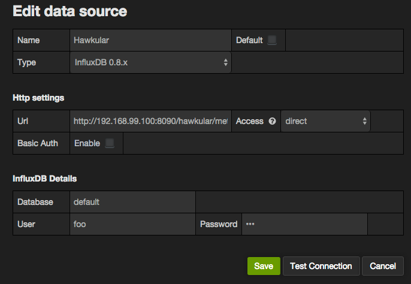Step 8
Create and customise a dashboard
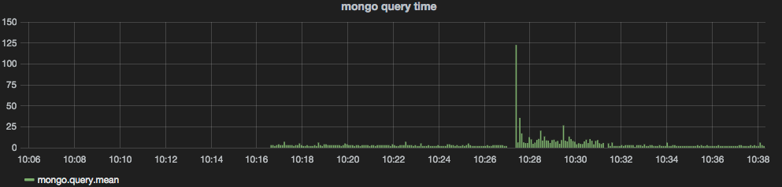